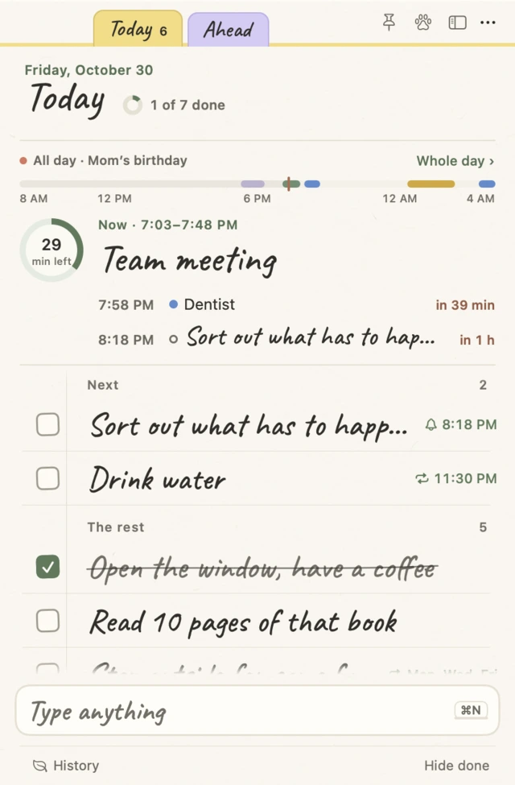

01 · The notepad
A notepad that puts now first
One sheet of paper with Today and Ahead tabs. The day ribbon at the top writes what's on now in large handwriting, with the time left in a ring beside it. What's next and today's list follow below.
